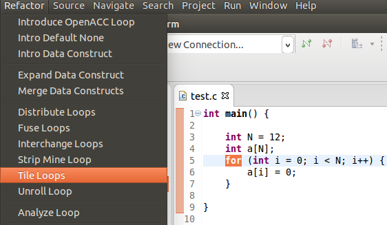
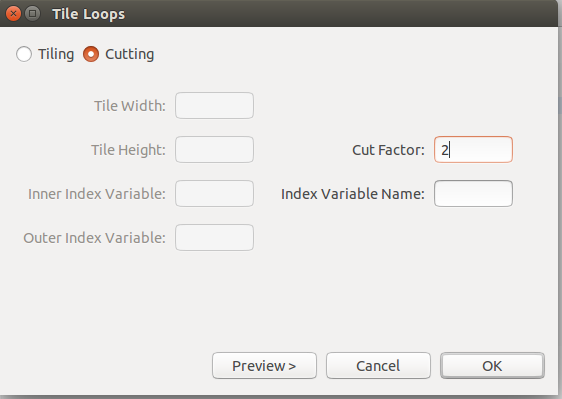
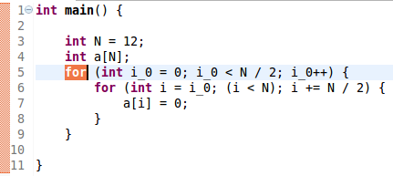

Description: Executes a Strip Mine and Interchange on a two-dimensional iteration to then iterate in in blocks.
Example:
- 1. Select the desired for loop to be changed and choose Tiling under the Refactoring menu.

- 2. Next make sure Tiling is selected and enter the desired dimensions.

- 3. The resulting for loop.

Use: Ensures that data used in a loop is kept in the cache until it needs to be reused and eliminates cache size requirements.
Restrictions:
- 1. Must be a two-dimensional perfectly nested loop structure
- 2. Loop may not have a pragma attached to it.
- 3. The selected loop cannot carry dependence in the less than direction and be in the greater than direction after interchange as occurred.
- 4. The selected loop cannot carry dependence in the greater than direction and be in the less than direction after interchange as occurred.
Cutting Option
Description: Turns a single loop into two loops such that the array is iterated over in multiple small strips, and the strips are iterated over together in adjacent iteration.
Example:
- 1. Select the desired for loop to be changed and choose Tiling under the Refactoring menu.

- 2. Next make sure that Cutting is selected and fill in the desired size of the cut.

- 3. The resulting for loop.

Use:?
Restrictions:?